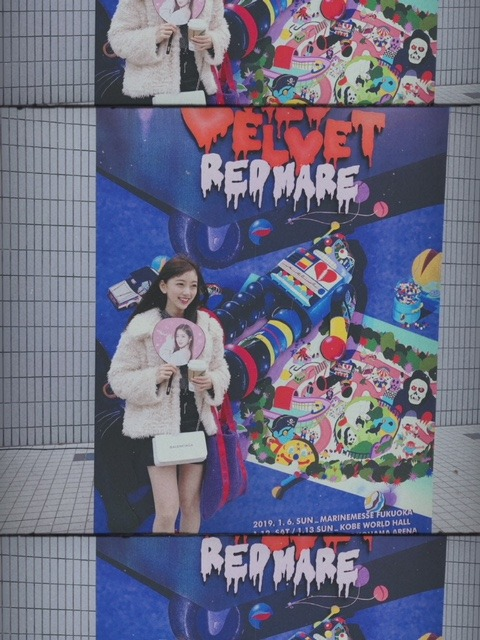

2019/0130Wed木苺になった
台北アリーナでのライブ！
楽しかったです☺︎
皆さん温かく迎えてくださり
ありがとうございました✨
謝謝✨

まだ行けてない国や県でも
ライブができたらいいな...
ステージ上から見える皆さんの笑顔が大好きだし
やっぱり歌って踊ることが好きなんだなぁって
ライブを重ねる度に思います
今この瞬間を大切にしなきゃ。
だか、ライブ1回1回を自分の最大限で表現していきたいですし
あとは、めいっぱい楽しむ！いつも楽しんでるけど！
バースデーライブも楽しみだなぁ
さてさて、、
わたしの趣味は、
美味しいお店巡り、
映画鑑賞、
温泉巡り、
美術館巡り で、巡りづくし。笑なのですが
やっぱり映画を観るのがとても好きで
観た映画の感想を
たまにブログに綴ってみようかなと思います！
そして
「第11回日本ブルーレイアンバサダー」にも
有難いことに選んでいただいたので
ブルーレイの良さ、映画の良さを少しでもたくさんの人に伝えていけるように頑張ります✨
美しい映像で観る映画は鳥肌が立ちます...
私の感想がきっかけで映画を見たよーなんて
言っていただけたら嬉しいな☺︎
早速、先日観た映画を！
755に少し感想を書いたのでそれを
引用しながら書き加えました
[ ワンダー君は太陽 ］
生まれつき障害を持った
男の子が学校に通いはじめ、
いろんなことが起こるヒューマン物語です
主役の男の子をはじめ
周りのクラスメイトや家族、
家族の恋人や友人 1人1人にもちゃんと
視点を置いて描かれているので
さまざまな方向からストーリーを見ることができて
色んな発見がありました
物事や現実を自分の"いつもどおりの角度"でみると、
それは変わらない"いつもどおりの景色"で、
でも時には違った方向から見つめてみる事が
私達には必要な事だなと思いました
例え結果や結末が予測しにくくて
怖いことがあるかもしれないけど
その一歩を踏み出す勇気が
自分や周りの人に
何か変化や希望を与えるかもしれない
人はみんなそれぞれ違う顔
違う声、違う性格で、
環境も違えば趣味も違い
もちろん考え方も人の数だけ違います
自分が人と違うのは当たり前で、
周りの人が自分と違うのも当たり前
だからこそ目の前の人と見つめあって
もっと相手のことを知って
理解して手を出して助け合っていくことができたらな...って思います
苦しいことや辛いことがあるのが人生で、
そこに立ち向かう人間は強くてかっこよくて
美しいものだなと再認識させられる
とても心が温まる映画でした
なんかね、
話の進み方や少しクスッと笑えるポイントが間にあったりする感じが私の好きなジャクリーンウィルソンさんが書く物語に似ていてとても惹きつけられました。
余談ですが
ワイルドスピードと
MEGザモンスターを観て思ったこと。
ジェイソンステイサムさんが素敵！
筋肉はもちろん
あの男らしい勇敢な性格に
優しさ溢れる笑顔
シュワルツェネッガーさん以来の衝撃...
特にMEGザモンスターで
女性がサメに食べられそうになった瞬間
躊躇なく海に飛び込んで助けにいく姿が
本当に男らしくて、、
女性は相変わらず
ミラジョボビッチさんと
アンハサウェイさんに憧れます
シンデレラやオーロラ姫のような
品もありながら強さもある素敵な女性
アクションもラブストーリーも似合うし
笑顔も真剣な表情も似合う...
映画ってどんどん引き込まれます✨
次はどんな映画を観ようかな？
あ、そうそう話が変わりますが
昨日はRed Velvet さんの
ライブを友達と観に行ったんだ〜
どっちが好きなの〜♪♪



人生で初めてうちわを持ってのライブ参加。
使い方がわからなくて、始まってから
そっとかばんに閉まってライブを観ました笑
パフォーマンスもMCも衣装も
ぜーんぶ可愛かった！
色んなアーティストさんのライブを観ると
私も頑張らなきゃって改めて思うし
皆さんに会いたくなる...
あ、今日23:45〜
レコメン！聴いてください
ではは。
コメント(381)
今度のバスラ楽しみにしています!
それと台北ライブお疲れさま！
最高の時間を過ごせるからまたすぐに行きたくなる！
今年は乃木坂のライブに行けるといいな！
台北ライブお疲れ様！！！！！
頑張っているみんなが大好き！！
何故そんなに可愛いのだ？
そんな人俺の周りには居ないぞ？
ブルーレイアンバサダーおめでとう
台北ライブお疲れさま
先日映画の十二人の死にたい子どもたち見てきました
今レコメン聴いてま〜す
さっきね、お誕生日の日を迎えたんですよ
それで、その瞬間を、レコメンが始まるとともに迎えられたから、本当に幸せです！！！
カレンダーの1月がみおなちゃんのカレンダーだったし、
レコメン聴きながら誕生日迎えられたし、本当に最高の誕生日です！！
本当にありがとう〜
これからも大好きです
ライブお疲れ様です～
バイトがあってレコメン聞けなかった～ 今週もう頑張れない⤵️
台北ライブお疲れ様!!
バスらは見事に外れて行けないけど家から応援してます！！頑張ってね！！楽しんでね！！無事怪我なく追われますよーに！！
俺も映画見る好きなんだ〜
落ち着くよね！！！
もっと未央奈を見れたらいいな！！
また、ブログ更新楽しみにしてるね！！✨✨
( ' ∇ ' )/ｶﾞﾝﾊﾞﾚｰ未央奈❤
台北ライブお疲れ様でしたー。台湾のファンの皆さんにはお待たせしましたですね。たしか乃木團が以前台湾のライブハウスにお邪魔して以来かなと思います。上海も台北ももっとたくさん行きたいですよね。
ブルーレイアンバサダー就任おめでとうございます！！私も最近発売になったソフトはできるだけブルーレイを買うようにしています。DVDより若干高いですが、4K/8K放送も始まって、いずれブルーレイを超える新しいメディアが登場するまではブルーレイをGETし続けたいですね。
ではまた。
可愛すぎて目眩しました！
オススメの映画で！
ディーン。君がいた瞬間
って映画オススメです！
エクスペンダブルズもかなりカッコいいからオススメ
めっちゃよかったよね！
ちなみに障害は「持つ」っていう言い方は実はあまり良くなくて、障害の「ある」って言い方をした方がええよ。
ブログ更新ありがとうございます。
台湾公演、おつかれさまでした。
今回もまたまた有意義なライブとなり、何よりのことです。詳しい様子は３月のM-ONでじっくり見たいと思います、楽しみです。タピオカ・小籠包、牛肉ラーメン‥‥‥、味の旅も楽しめたようですね。
そしてレコメン、おつかれさまでした。未央奈の笑い声にはホント癒されます。ありがとうございます。
ザンビも 見たいよ～。
今日もお疲れ様です
レコメン聴いてますよー
台北ライブお疲れ様でした
大盛況だったみたいでよかったです
海を渡ってもファンがいるってすごい事ですよ
バースデーライブも最終日に行きますので楽しみにしてます
シュワルツェネッガーならベタ過ぎるけどターミネーターが一番好きです（子供の頃お風呂で、溶鉱炉に沈む真似してたな笑）
red velvetさんには悪いけど堀ちゃんが好きです
台北でライブやった後に、red velvetさんのライブに行くなんてとてもアクティブですね（お疲れ様です）
これからザンビ観ますね（今日はまだ眠くない！）
ありがとうございました
ライブ楽しくて良かったね(*^^*)
まだ行けてないところで
ライブできたら良いね♪
バースデーライブも楽しみだね(≧∇≦)
ブルーレイアンバサダーおめでとう！
頑張ってね！
応援してるよ(*^^*)
ワンダー君は太陽とワイルドスピード
見てみるね(*^^*)
またね♪
未央奈ちゃん神推し
秀喜より！(≧▽≦)
大好きな映画が仕事につながって良かったね
台北アリーナのライブお疲れ様でした！！
応援しつつも未央奈が居ない日本が寂しかったです〜
ライブ成功して、無事に帰ってきて良かった〜。(*´ω｀*)
写真見て改めて未央奈の目が大好きです！涙袋も可愛いけれど上まぶたの形が凄くセクシーですよ〜。そして大きいおめめと黒い瞳がすっごく可愛いです♬
…今レコメンの放送が気になり過ぎてブログコメントが進まない笑
趣味いいね！今私は会社でグルメなキャラがついたくらいランチは色々なところに行きます。^ ^ 未央奈より六本木食べてるんじゃ無いかな？？
改めてアンバサダーおめでとう！^ ^
未央奈の映画好きなことや、たまに話してくれる映画の話には凄く映画に対する愛情を感じられます。
映画ではなくブルーレイアンバサダーでは有りますが未央奈の映画の話、凄く伝わって来るのでバッチリだと思うよ！頑張ってね！！(*´꒳`*)
続きはまた後で書くね！
未央奈が最近筋肉の話をしてるから久々に筋トレしてるよー！でも冬服だと成果を未央奈に見せられないのが残念ですがいい感じです笑
ではー
鹿児島でもライブして欲しい！いっぱい美味しいもの献上するから（笑）
映画好きの未央奈ちゃんにぴったり！
アクション映画に肉体美はつきものだよね〜！(^^)
色んな勉強してて偉いねー、楽しみ方は人それぞれだし良いんじゃね
京都学園大学の空手部、忙しくなるぞー笑
カップルになってる二人は｢？！！｣でしょうね～
台北ライブお疲れ様ー
バスラ一日だけあったんだ、あと2月・3月の個握楽しみ！
未央奈が1番可愛いいーーー
トランスポーター、ブリッツ、メカニックとかも好き！
つか、この方が出演されてる作品基本面白い！！
台湾でのライブお疲れ様でした。
もっと海外でもライブをやって、ファンが増えると嬉しいです。
これからも、応援して行きます。
映画紹介、
みおな様の文章で、文章力で、
涙がでました。
これからも楽しみにしています☺︎
ブルーレイのアンバサダー、おめでとう！！
色んなお仕事ご苦労様♪
楽しんで頑張ってね♪
ジェイソンステイサム筋肉モリモリだよね♪
エクスペンダブルズ面白いよ♪
シュワちゃんもスタローンもジェイソンも出てるよ♪
体調とか気を付けてね♪
ジェイソンステイサム勇敢だったね
ステイサムは内面も外面も「漢の中の漢」って感じでかっこいいよね！
トランスポーターのステイサムはかっこよすぎた
個人的にはワイルドスピードだとハンが一番好きかな！
7で死んじゃったときは本当にショックだった
前回はブログ「今日のこと」にブログと「のぎおび」と「レコメン！」の感想を書きました！
時間→「No.315 2019年1月26日 02:00」
ブログ更新ありがとうございます！
久々のコメントになってしまってスミマセン！
その理由は次回書かせて頂きます！
やっぱり未央奈ちゃんは白が1番似合うな～！
台北アリーナでのライブお疲れ様でした！
いつかアジアツアー出来ると良いですね！
僕も歌って踊るの、特に踊るのが大好きです！音楽が流れると自然に体が動いてしまいます！
趣味ですが、確かに巡りづくしだね(笑)
でも、僕は嵐や乃木坂のライブDVDを観たり「レコメン！」や「バナナマンのバナナムーンGOLD」を聴いたり全部インドアの趣味です！響きが良いしアウトドアなのが羨ましいです！
「第11回日本ブルーレイアンバサダー」にも選んでもらって、僕まで嬉しくなります！
長文で書かれた映画愛、分かりやすくて伝わりやすい文章だったのですらすら読めました(嬉)
Red Velvetさんのライブ行けて良かったね！
せっかくのうちわ、鞄に閉まって観てたの(驚)
どっちが好きなの？って分かってるくせに(笑)
そりゃ～未央奈ちゃん1択ですよ！
今週も「レコメン！」お疲れ様でした！
京都学園大学の空手部員が増えますように！
ここまで読んで頂きありがとうございました！
毎日お仕事お疲れ様です！体調にはくれぐれも気を付けて頑張ってくださいね！
おやすみおな～！
田舎ですけどいいところです！
田舎ライブもたまには悪くないのでは
第11回日本ブルーレイアンバサダー就任、おめでとーう！！
未央奈の映画の感想からも分かるけど、
未央奈はさすが映画好きなだけあって、
映画の中の色んな部分を本当によく見てるし、
映画から受け取る感じ方や考え方が凄いなーって思う。
だから、ブルーレイアンバサダーは、
なるべくしてなったと思うくらい、未央奈に本当にピッタリだと思うよ！
未央奈が、アンバサダー特別賞で何を選ぶのか、めちゃくちゃ興味がある。
なんか凄く楽しみだな～
この賞を受賞した作品は、俺、絶対観ちゃうんだろうなー笑
レコメン堀殿の回観ました⊂(ο･㉨･ο）⊃”くまﾃﾞｽ…
揚げ饅頭♡牛肉ラーメン♡フラッシュモブ♡空手♡京都トークありがとうございます★'.･.LOVE~(^▽^(^▽^*)~LOVE.･.･:☆
ステイサムは外面も内面も「漢の中の漢」みたいな感じでかっこいいよね！
特にトランスポーターのステイサムはかっこよすぎる
個人的にはワイルドスピードだとハンが一番好きかな
ぽてとです！
台北でのライブお疲れ様♪
そしてライブ観戦もね！
うちわは確かにどう使えばよいか悩むよね(笑)
軽く手元で振る感じかな？(^^)
映画は来月公開のシティーハンターが
楽しみかなー
じゃあまたね！
とても嬉しかった
very very happy
謝謝


ジェイソン・ステイサムならトランスポーターおすすめ！